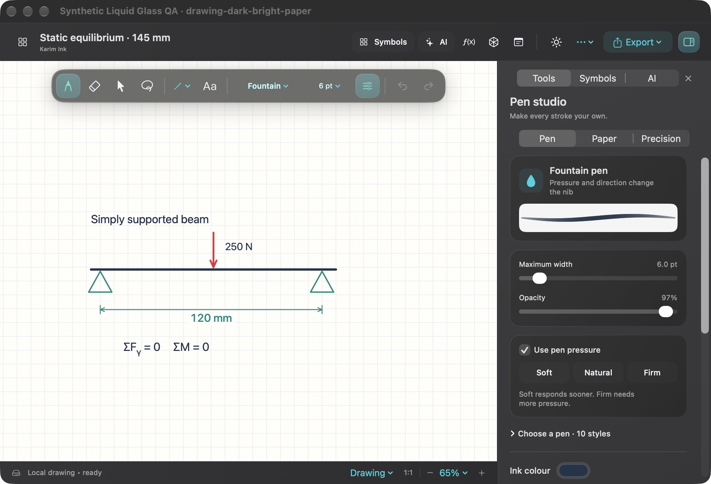
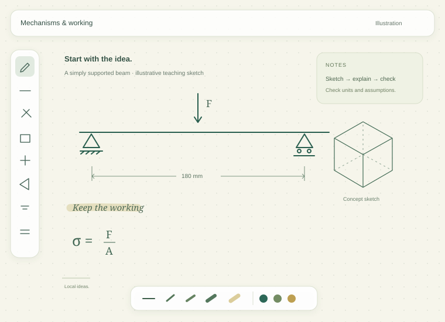
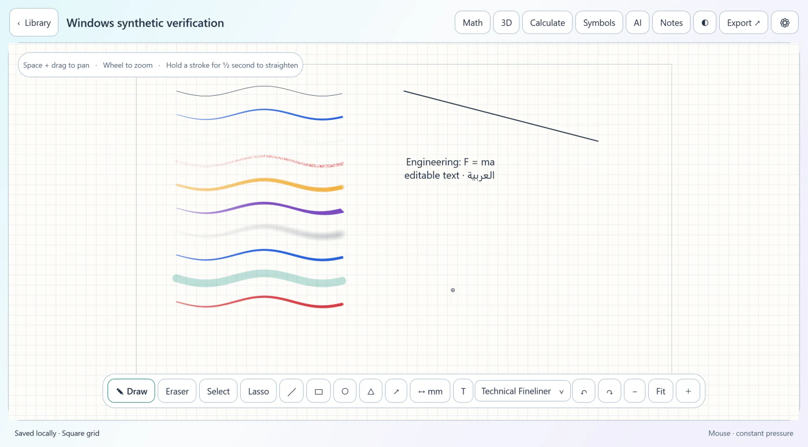
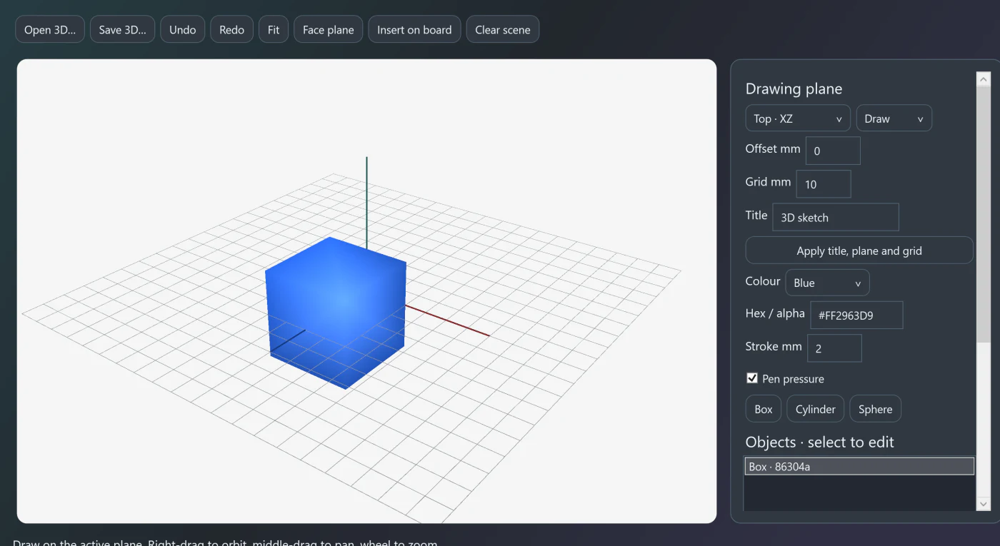

Let the ink settle.
New strokes stay unselected. Use Select or Lasso deliberately when you want to move something.
Made for your ideas 0.2 Test
A whiteboard for the way you think. Sketch a mechanism, work through an equation, or give a thought its first shape. SketchGlide brings drawing, notes and useful tools into one calm workspace.
Apple Silicon · macOS 14+ target Windows 11 · Intel / AMD x64
Mac · Unnotarized First launch help ↗
Windows · Unsigned Extract & open ↗
All verified downloads · Publishing checklist
A closer look at the Mac workspace.
Real ink. Useful tools. A little room to breathe.


Scroll to move closer
Start with the pen · Mac toolkit
Choose a tool that fits the job. A fine technical line, a textured pencil, or a broad highlight — then keep your attention on the work.
A steady, uniform line for dimensions and engineering schematics. Pressure scaling is off by design.
Also in the toolkit: Fountain, Chalk, Marker, Calligraphy, Airbrush and Dry Erase. Set colour, width, texture, opacity and pressure response in the app.
New strokes stay unselected. Use Select or Lasso deliberately when you want to move something.
Pause at the end of a stroke to try shape correction. Give a corrected line a measured length in millimetres.
Plain, ruled, grid, dots, graph, engineering, blueprint, isometric, polar and dark board backgrounds.
Your engineering shelf
Search and place 380 symbols and diagrams, from Greek notation to circuit components and mechanical diagrams.
Selected diagrams have optional explanatory animations. Check the conventions your project needs.
Resistors, capacitors, sources, motors, semiconductors and logic gates — organized for notes and schematic sketches.
Topic previews are illustrative. The app includes searchable names and diagram placement.
Think in more than one dimension
Draw offline on Mac or Windows. Optional AI is there when you choose to use it; each platform has its own available tools.
DeTeXt runs offline with 1,098 command definitions for individual handwritten symbols. Review a candidate and add it to the supported LaTeX formula editor.
Local smoothing, OCR and spelling review help tidy notes while keeping your original ink available.
Single symbols, not automatic recognition of complete equations. Always check numbers and units.
Sketch on simple planes, add boxes, cylinders and spheres, and move around the scene. Keep an editable 3D file or insert its preview on the board.
Use the ruler, protractor, unit converter, calculator and function plots alongside your sketch.
Concept sketches, not CAD constraints, manufacturing checks or an engineering solver.
On Mac, use Apple's local model when available. Windows can connect to a separately installed Ollama model. Both can use the OpenAI API with your own key. The route is shown before Send. A board image is included only when you attach it.
Every idea starts somewhere
A quick note. A new shape. A thought you haven’t quite worked out yet. There’s room for all of it.
Mac files & sharing · Keep it. Share it.
Recent drawings, folders and search keep the library useful. Editable local files keep the next step yours.
Local autosaving, recovery copies and save-conflict protection. Export .engboard and .karim3d files when you need an editable backup.
Create PDF, PNG or JPEG copies for reports. Import images or PDFs and paste text and images onto the canvas.
Use Excalidraw export, basic one-way Craft updates, or a Notion HTML companion. Native board links reopen the Mac app; they do not embed it or provide multiplayer.
A minute for the next idea
A short introduction to SketchGlide, with illustrative drawing, maths and shape examples.
The Windows workspace
Draw a line, add a note, or explore a shape. These are real captures of example drawings from the Windows Test.


Pick the workspace that fits
Both are 0.2 Test builds. Expect rough edges, keep backups and help shape what comes next.
Apple Silicon · macOS 14+
Native drawing, symbol recognition, Apple Vision text review, vector PDF export and a 3D concept sketchbook. Optional Apple on-device chat needs compatible hardware and a ready model.
Ad hoc signed and unnotarized. Follow the first-launch guide.
Windows 11 · Intel / AMD x64
A native WPF workspace with ten pens, ten backgrounds, the symbol library and 3D concept sketches. Single-symbol ONNX recognition, English OCR review and optional cloud or Ollama AI use their Windows routes.
Unsigned Test build. PDF export uses a rendered image. Physical Intel / AMD tablet testing remains open.
Explore the source, send a reproducible bug report, or propose a change on GitHub.
Before your first drawing
Yes. The website is published to cloud hosting, with a GitHub Pages mirror. Downloads are hosted by GitHub and itch.io. Visitors do not connect to Karim Eldamaty’s Mac, and the published pages stay available when it is switched off.
This free Test build has an ad hoc signature, not an Apple Developer ID signature, and has not been notarized. For a trusted download, try opening it and then use System Settings → Privacy & Security → Open Anyway for SketchGlide, if available. Keep macOS protections enabled; see the first-launch guide and Apple’s instructions.
The Mac app uses standard AppKit pen events; the Windows Test uses Windows stylus input. Pressure, tilt, hover and eraser data can work when your tablet’s platform driver supplies them. The app is not restricted to Xencelabs, but physical operation has not been verified across Wacom, Huion, XP-Pen and every other brand. Vendor-specific remotes and buttons need their own compatible driver mapping.
Drawing, local files, engineering tools, single-symbol recognition and local handwriting review work offline. Mac on-device chat needs a ready compatible Apple Intelligence model. Windows local chat needs a separately installed Ollama service and model. OpenAI API chat, external links and Craft updates need internet.
The assistant can use the OpenAI API with your own key and separately billed API usage. It does not sign into your ChatGPT subscription. Mac local chat needs macOS 26 or later, supported hardware and a ready Apple Intelligence model. Windows AI can use the cloud API or a separately installed local Ollama model. AI is optional; normal drawing does not need an account.
On Mac, Metal accelerates active ink and the app limits caches and background work. A particular frame rate or latency is not guaranteed. Performance depends on your hardware, display, drawing size and active tools; very large boards and zoom rebuilds can still pause.
The Windows x64 Test is for Intel / AMD PCs. The Mac release and Windows x64 Test are separate builds. Visit Support development to donate with PayPal. No payment is needed to use the Test builds.
Use the feedback page to prepare a report with your app version and operating system and reproduction steps. Do not include keys, private drawings or sensitive work in a public report.
Support development
SketchGlide is a personal project made by Karim Eldamaty. Voluntary donations help support its development. The Test builds are free to use.
PayPal donations are being set up. Check back for Karim Eldamaty’s verified payment link.
Donations are optional and do not buy extra features or a guaranteed support response.
0.2 Test
A personal whiteboard made by Karim Eldamaty.
Mac and Windows 0.2 Test.
Test release · Unnotarized · ad hoc signed
Unsigned Test release
Explore the source code Release notes & checksums SHA-256 checksumsFree Apple Silicon Test build. Ad hoc signed; not notarized by Apple. Read the first-launch instructions and keep macOS security protections enabled.